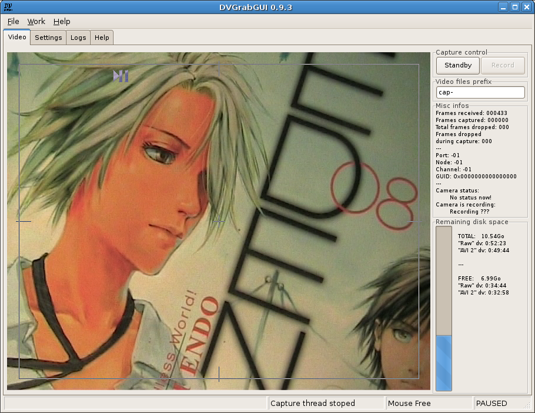

Prev: Reference → Window Menus --- ↑Home --- Next: Reference → Video Window ("Small" mode)
DVGrabGUI 0.9.4
Reference → Video Window
This is the main window, where you can see the dv stream, and start/stop
capture…

-
The four top tabs
-
The "Video" window
This is the main window, where you start/stop the dv capture, and
control what you are recording.
-
The "Settings" windows
This is where you adjust (nearly) all settings about the capture
& GUI.
Window divided in three sub-tabs:
Capture,
Hardware, and
GUI.
-
The "Logs" window
This window display all messages sent by DVGrabGUI (or the
underlying wxWidgets!)
Note that these messages are also written in a log file
(~/.dvgrabgui/dvgrabgui.log). Please send them with any
bug report!
-
The "Help" window
Show this window!
Note that this tab is only available with wxWidgets 2.8; with
wxWidgets 2.6, the help shows up in a separate frame…
-
The "Video" window
-
Video display
This window shows the dv stream when capture thread's running.
It allows you to start/stop capture thread (left-clicking left half
window), and…
It allows you to start/stop capture (left-clicking right half window).
-
Status bar
-
First area: This is the "general info" area (menu
entries help, …).
-
Second area: This gives you the capture thread status.
-
Third area: This says you whether the mouse is captured
or not.
-
Fourth area: This gives you the capture status
(recording or paused).
-
Standby/Stop button
Toggle button to start/stop capture thread (same as left half of
video window).
-
Record/Pause button
Toggle button to start/stop dv recording (same as right half of
video window – disabled when capture thread's not running!).
-
"Video file prefix" text area
Enter here the prefix you want all your video files captured to have
(e.g. capt- will give files like
capt-0001.avi, capt-0002.avi, etc.)
Note that you have more options about file names in the
settings window.
-
"Misc info" text area
This static text gives you "hardware" infos: frames
received/captured/dropped during capture, Port/Node/Channel/GUID of
the established dv connection, and dv-reported camera status…
-
Disk Space
This area gives you info about total/remaining disk space (for the
mount point of the directory where you chose to store your
captured video files).
Prev: Reference → Window Menus --- ↑Home --- Next: Reference → Video Window ("Small" mode)
(c) 2006, 2007, 2008 Bastien Montagne (montagne29 at wanadoo dot fr).
Project hosted at sourceforge.net/projects/dvgrabgui.